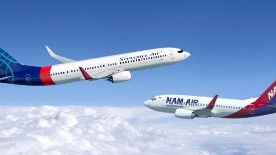

Garuda Indonesia Berhasil Perbaiki Sriwijaya Air
Ekonomi | 10 November 2019 | 18:40 WIB
Garuda Indonesia dan Sriwijaya Air kembali bercerai. Hubungan kedua maskapai ini sempat rengang juga beberapa waktu lalu. Pengamat Penerbangan Alvin Lie pun berbagi cerita bagaimana proses awal Sriwijaya meminta bantuan kepada Garuda Indonesia agar perusahaan mereka tidak berhenti beroperasi pada akhir tahun lalu
Di awal kisahnya, Alvin bercerita bahwa dengan utang yang cukup besar kepada PT GMF AeroAsia Tbk yang merupakan anak usaha Garuda Indonesia yang bergerak di bidang perawatan pesawat, serta dua BUMN lainya, Sriwijaya meminta Garuda untuk membantu mereka agar tetap terus beroperasi dan melakukan penangguhan pembayaran.
"Pada saat itu saya senang dengan keputusan Garuda Indonesia bersedia membantu mereka," cerita Alvin berdasarkan keterangannya, Minggu (10/11/2019).
Alvin tidak bisa membayangkan nasib enam ribu karyawan beserta keluarganya yang kehilangan mata pencaharian bila Sriwijaya Air berhenti beroperasi. Hal tersebut menjadi nilai utama masalah kemanusiaan. Selain itu pada saat tersebut menjelang pemilu dan tentunya ini akan menjadi isu besar.
Bantuan Garuda kepada Sriwijaya juga mempertimbangkan kelancaran pembayaran utang oleh Sriwijaya bila mereka berhenti beroperasi, selain juga sebagai penugasan oleh Kementerian BUMN untuk mengamankan aset negara berupa piutang ke beberapa BUMN.
Selain itu juga pertimbangan keseimbangan industri penerbangan akan terganggu bila Sriwijaya berhenti."Saya melihat Garuda Indonesia telah memperbaiki sistem dan standar layanan, maintenance, safety dan pengelolaan SDM di Sriwijaya Air sehingga mereka mengalami perubahan yang progressive," kata dia